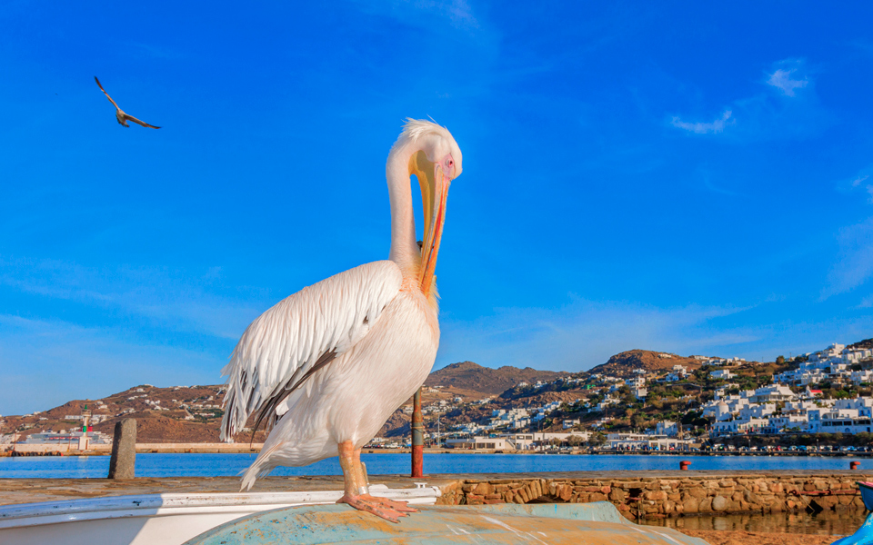
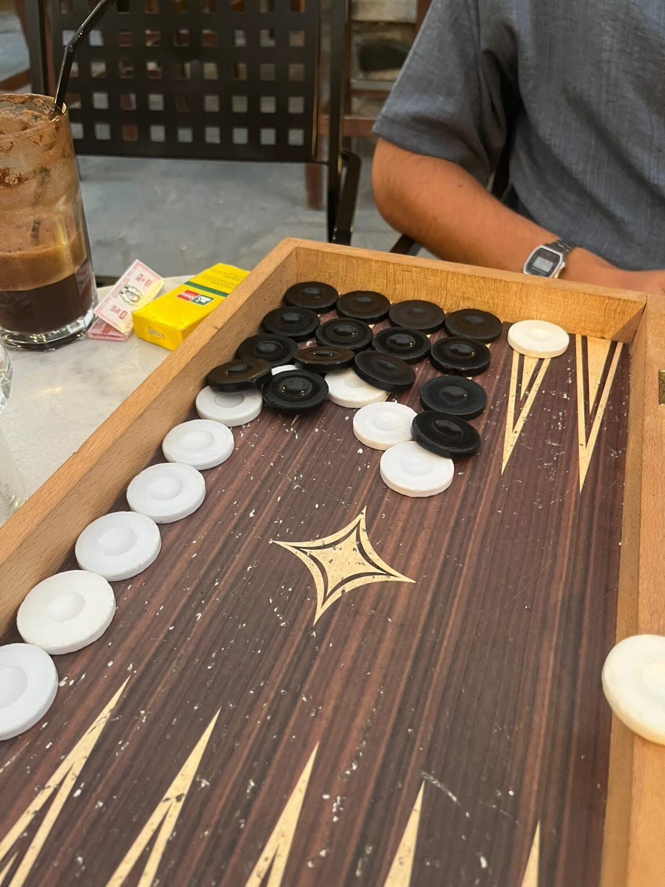
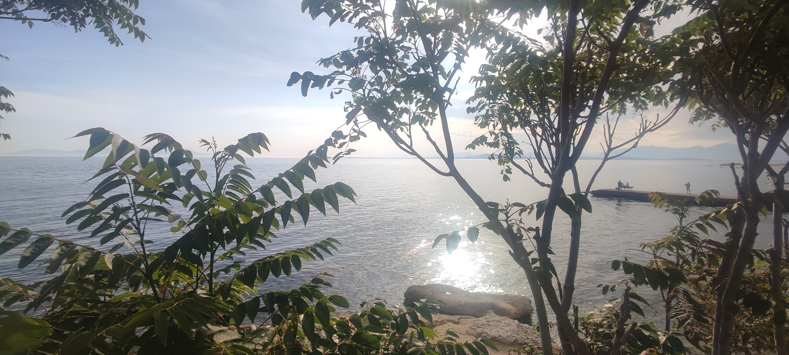
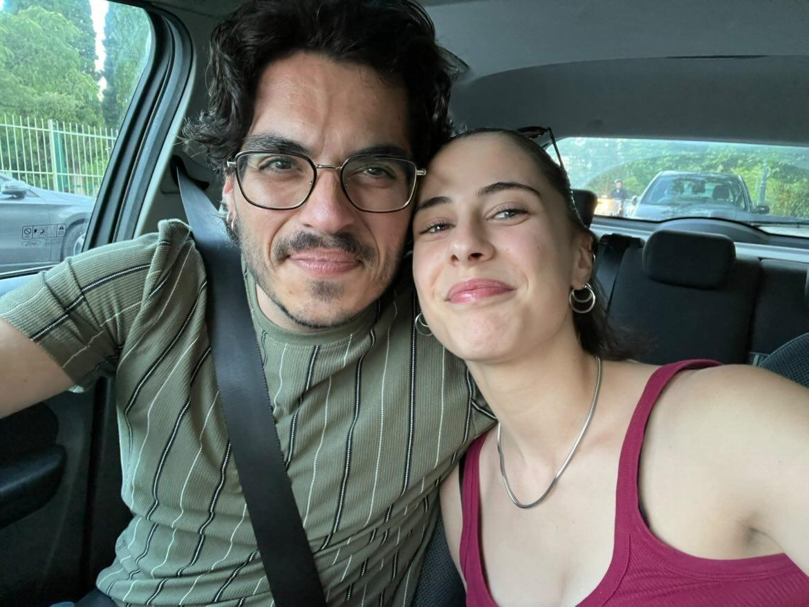
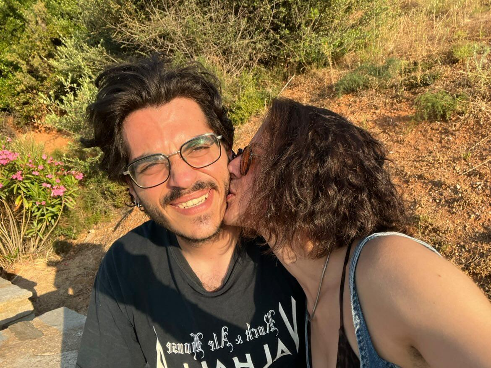
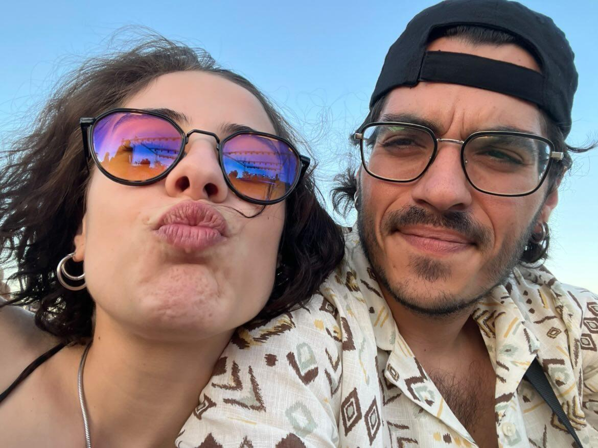
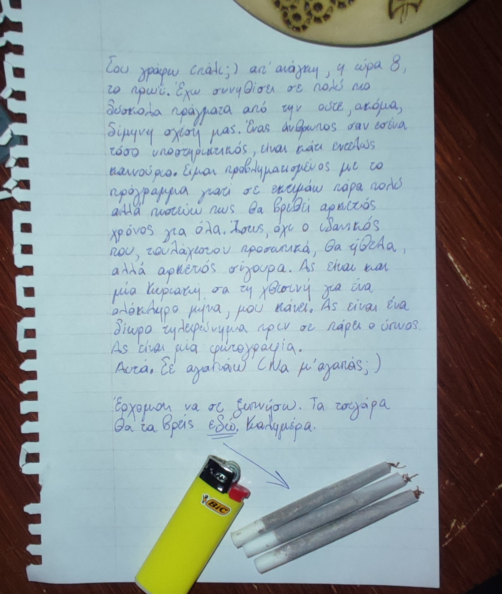
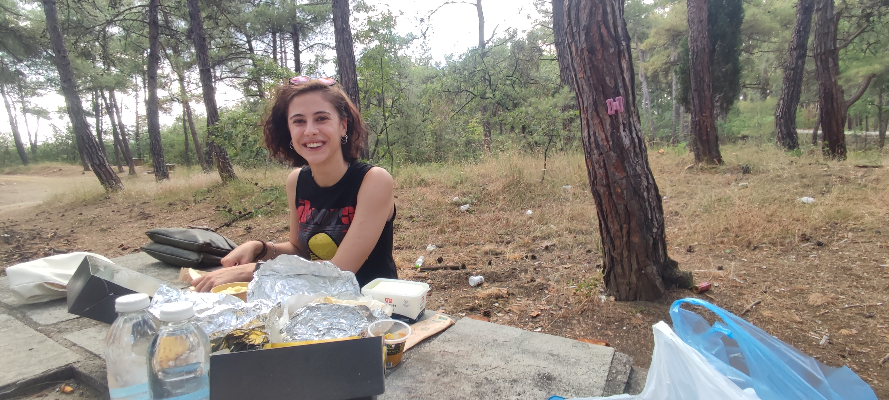

Η πρώτη Παραγγελιά 🎵
Το πρώτο τραγούδι που μου ζήτησες αφού ξεσκάλωσα τη Ταμειακή με το POS
Απλά, λυτά, to the point 🤭
"Έχεις Κοπέλα;"
Επιθετικότατη πεσιματική σε ανυποψίαστο DJ
Η ιστορία του γάμου μας 💍
Μοιραστήκαμε την ιστορία του γάμου μας. Το πρώτο μας τραγούδι και το γεγονός ότι είμαι (ακόμα) σίγουρος ότι μου κρύβεις παιδί/παιδιά.

Πέτρος, αλλιώς, Ο Πελεκάνος της Μυκόνου
Το Journey 💿
Παραλίγο να μην εμφανιστώ. Εμφανίστικα, εμφανίστηκες και συ. Μια κούκλα. Ερωτεύτηκα τα μούτρα σου, τα μάτια σου και τον ενθουσιασμό σου. Από τα καλύτερα ραντεβού που έχω βγει στη ζωή μου.
Αρνεμούσι 🍃🌧☔💦
"Σα ποίημα σουρεάλ..."
Μικρό ραντεβουδάκι στο Αρνεμούσι, φαγητό, συζητήσεις, πολύ γέλιο. Ήσουν εκείνη τη μέρα, και είσαι ακόμα, μια πανέμορφη, πανέξυπνη γυναικάρα. Στο τέλος έβρεχε και σα σωστός παίκτης είχα φροντίσει να έχω ομπρέλα για 2 άτομα.
Η αρχή της καταστροφής 🎲
Τάβλι στο Αλάβαστρο... Η αρχή του εθισμού και της προσωπικής μου καταστροφής στις πόρτες και το ασόδυο. Έχω κερδίσει στο ασόδυο μετρημένα 7 φορές από εκείνη τη μέρα

Δεν είναι από εκείνη τη μέρα αλλά είναι αντιπροσωπευτικό παράδειγμα του πέους που απλόχερα κερνάς... ΓΜΤΠΤΝΜ
Απ' τα χαμηλά στα ψηλά 🌊⛰️
Βραδινό μπανάκι και άραγμα στο βουνό με μπυράκια. *Ξέχασες* το Αουτάν. Φύγαμε σα κυνηγημένοι από τη παραλία στη Μέση, αφού εσύ, μόνη σου τελείως, ξέχασες το Αουτάν και πήγαμε στο φρούριο στο βουνό.
Πρώτη βόλτα - Δεύτερη Ταβέρνα 🌊🦐
Κάναμε τη πρώτη μας βόλτα στο Φανάρι. Δε βγήκαμε μαζί κάποια φωτογραφία. Το σκεφτόμουν από τη στιγμή που φτάσαμε.

Μπορεί να μη βγήκαμε φωτογραφία με το "πιπινάκι" αλλά έβγαλα φωτογραφία τη θέα
Ξάνθη Vol.01 🥰

Η πρώτη μας φωτογραφία
Τη χαζεύω πολύ συχνά. Ωραία μέρα. Ξάνθη μετά τη δουλειά. Τρέχαμε να προλάβουμε μη χάσεις το "meeting" στο Κέδρο. Μπαίνοντας στο αμάξι με το παγωτό σου.
Σου ξέφυγε 🤫

Έλα πάμε παραλία
Μιλούσες με τα παιδία. Σου έστριψα τσιγάρο χωρίς να το ζητήσεις. Σου ξέφυγε ένα "Σ' αγαπώ"
Χατζιζαμάνη, Φανάρι Φεστ - Day 03 🎸
Είπα στο τρελό μωράκι τ' ουρανού ότι είμαι βαθύτατα ερωτευμένος με το άτομό του, να ούμε και ότι το αγαπάω.

Ήλιος, Θάλασσα, Αμουδιά. Τι άλλο θέλει η καρδιά
Συζητήσεις και εξομολογήσεις 📝
3 τσιγάρα την ημέρα, πρωινά σημειώματα και σουβλάκια (καλαμάκια) στο βουνό.

Eξομολόγηση τύπου Σιδηρόπουλος

Soyvlaki (Kalamaki) Radevoydaki
Κιόλας 2 μήνες! 🎉
Δε πίστευα ότι σε τόσο σύντομο χρονικό διάστημα θα ανυπομονούσα τόσο πολύ για ότι μπορεί να έρχεται. Δύο μήνες γεμάτοι όμορφες στιγμές. Χαρούμενη επέτειο 2 μηνών, σε αγαπάω! (Όχι ομοφυλοφιλικά!)